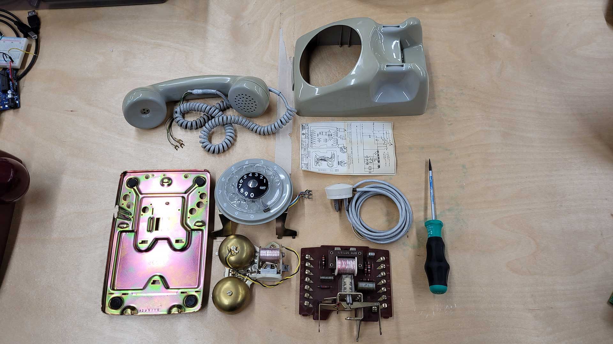
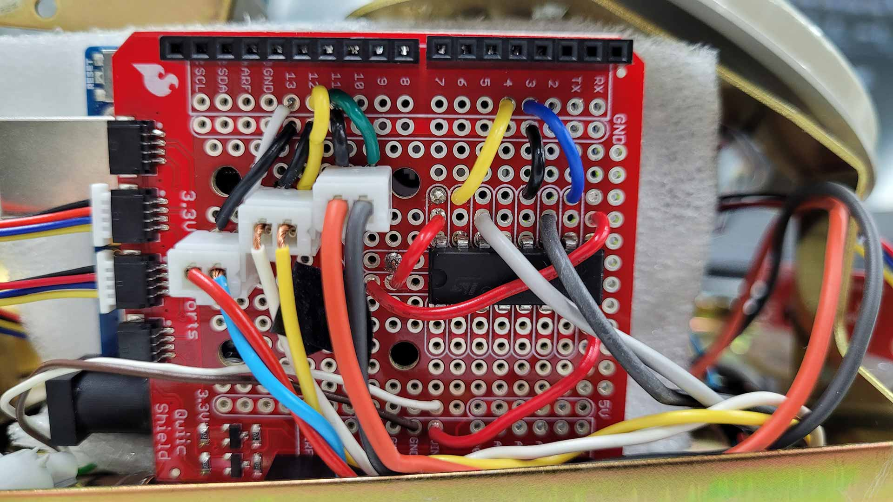
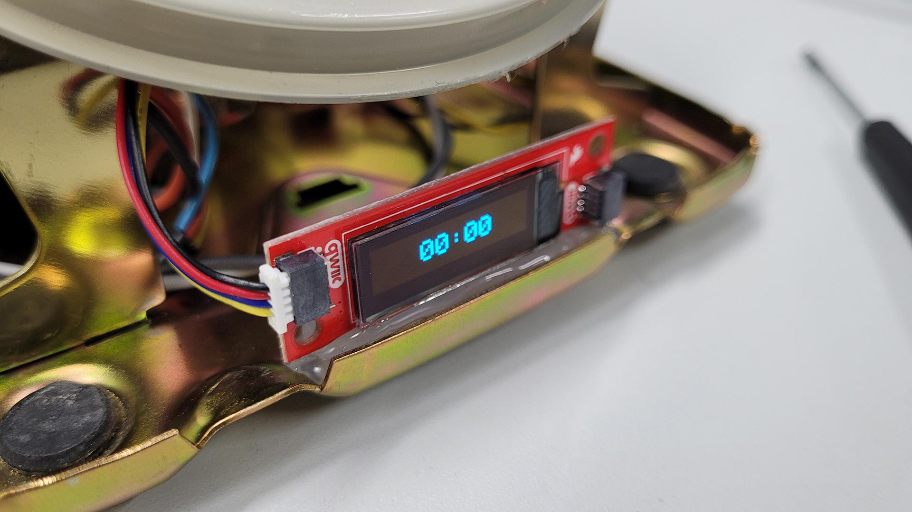
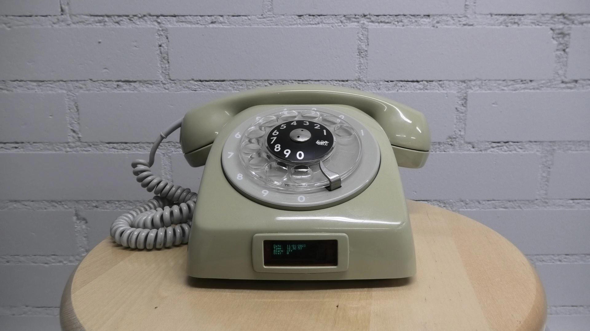

RD:AC
Creating an alarm clock by recycling an old rotary-dial telephone
Rotary-dial telephones were first introduced in the early 1900s and were widely used throughout the 20th
century. Their unique look and feel helped them become the standard for telephone service in the mid-20th
century. However, in the 1980s, touch-tone phones eventually replaced rotary phones because, among other
things, they offered a faster and more efficient way to dial. Today, the rotary-dial telephone is a nostalgic
relic that may even be totally unknown to younger generations. I, too, only know rotary phones as toys, which
I played with as a child when I was visiting my grandparents.
In the Physical Computing course of my studies in New Media, I picked up a rotary phone again and was inspired
to venture into what hides under its hood. By programming an Arduino Uno with a real-time clock and display
component and using the phone's dial, switch, and ringer, I brought forgotten technology back to life.
Full documentation:
tinoselic.github.io/physical-computing




Year
2022
Type
Arduino Project
Coding Language
C++ (Arduino)
Java (Processing)